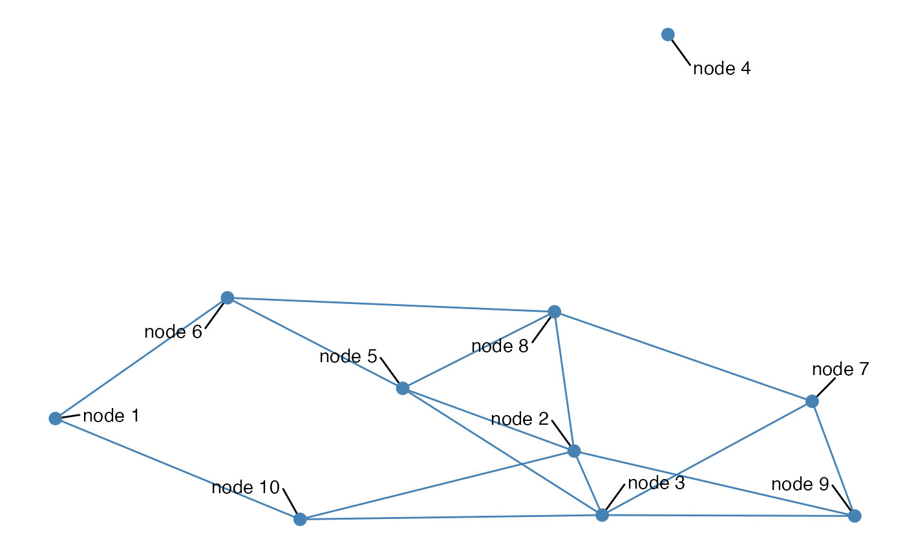

All arguments to these geoms are identical to those of
geom_text_repel and
geom_label_repel.
geom_nodetext_repel(
mapping = NULL,
data = NULL,
parse = FALSE,
...,
box.padding = unit(0.25, "lines"),
point.padding = unit(1e-06, "lines"),
arrow = NULL,
force = 1,
max.iter = 10000,
nudge_x = 0,
nudge_y = 0,
na.rm = FALSE,
show.legend = NA,
inherit.aes = TRUE
)
geom_nodelabel_repel(
mapping = NULL,
data = NULL,
parse = FALSE,
...,
box.padding = unit(0.25, "lines"),
label.padding = unit(0.25, "lines"),
point.padding = unit(1e-06, "lines"),
label.r = unit(0.15, "lines"),
label.size = 0.25,
arrow = NULL,
force = 1,
max.iter = 10000,
nudge_x = 0,
nudge_y = 0,
na.rm = FALSE,
show.legend = NA,
inherit.aes = TRUE
)Set of aesthetic mappings created by aes or
aes_. If specified and inherit.aes = TRUE (the
default), is combined with the default mapping at the top level of the
plot. You only need to supply mapping if there isn't a mapping
defined for the plot.
A data frame. If specified, overrides the default data frame defined at the top level of the plot.
If TRUE, the labels will be parsed into expressions and displayed as described in ?plotmath
other arguments passed on to layer. There are
three types of arguments you can use here:
Aesthetics: to set an aesthetic to a fixed value, like
colour = "red" or size = 3.
Other arguments to the layer, for example you override the
default stat associated with the layer.
Other arguments passed on to the stat.
Amount of padding around bounding box, as unit or number.
Defaults to 0.25. (Default unit is lines, but other units can be specified
by passing unit(x, "units")).
Amount of padding around labeled point, as unit or
number. Defaults to 0. (Default unit is lines, but other units can be
specified by passing unit(x, "units")).
specification for arrow heads, as created by arrow
Force of repulsion between overlapping text labels. Defaults to 1.
Maximum number of iterations to try to resolve overlaps. Defaults to 10000.
Horizontal and vertical adjustments to nudge the
starting position of each text label. The units for nudge_x and
nudge_y are the same as for the data units on the x-axis and y-axis.
If FALSE (the default), removes missing values with
a warning. If TRUE silently removes missing values.
logical. Should this layer be included in the legends?
NA, the default, includes if any aesthetics are mapped.
FALSE never includes, and TRUE always includes.
If FALSE, overrides the default aesthetics,
rather than combining with them. This is most useful for helper functions
that define both data and aesthetics and shouldn't inherit behaviour from
the default plot specification, e.g. borders.
Amount of padding around label, as unit or number.
Defaults to 0.25. (Default unit is lines, but other units can be specified
by passing unit(x, "units")).
Radius of rounded corners, as unit or number. Defaults
to 0.15. (Default unit is lines, but other units can be specified by
passing unit(x, "units")).
Size of label border, in mm.
## geom_nodetext_repel example
if (require(network) && require(sna)) {
n <- network(rgraph(10, tprob = 0.2), directed = FALSE)
ggplot(n, aes(x, y, xend = xend, yend = yend)) +
geom_edges(colour = "steelblue") +
geom_nodetext_repel(aes(label = paste("node", vertex.names)),
box.padding = unit(1, "lines")
) +
geom_nodes(colour = "steelblue", size = 3) +
theme_blank()
}

## geom_nodelabel_repel examples
if (require(network) && require(sna)) {
data(flo, package = "network")
n <- network(flo, directed = FALSE)
ggplot(n, aes(x, y, xend = xend, yend = yend)) +
geom_edges(colour = "steelblue") +
geom_nodelabel_repel(aes(label = vertex.names),
box.padding = unit(1, "lines")
) +
geom_nodes(colour = "steelblue", size = 3) +
theme_blank()
# label only a subset of all nodes
n %v% "degree" <- degree(n)
low_degree <- function(x) {
x[ x$degree < median(x$degree), ]
}
ggplot(n, aes(x, y, xend = xend, yend = yend)) +
geom_edges(colour = "steelblue") +
geom_nodelabel_repel(aes(label = vertex.names),
box.padding = unit(1.5, "lines"),
data = low_degree,
segment.colour = "tomato",
colour = "white", fill = "tomato"
) +
geom_nodes(aes(size = degree), colour = "steelblue") +
theme_blank()
}